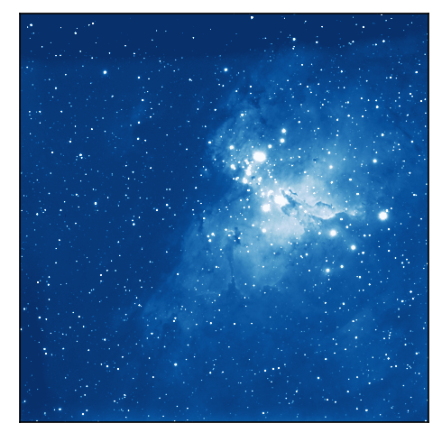
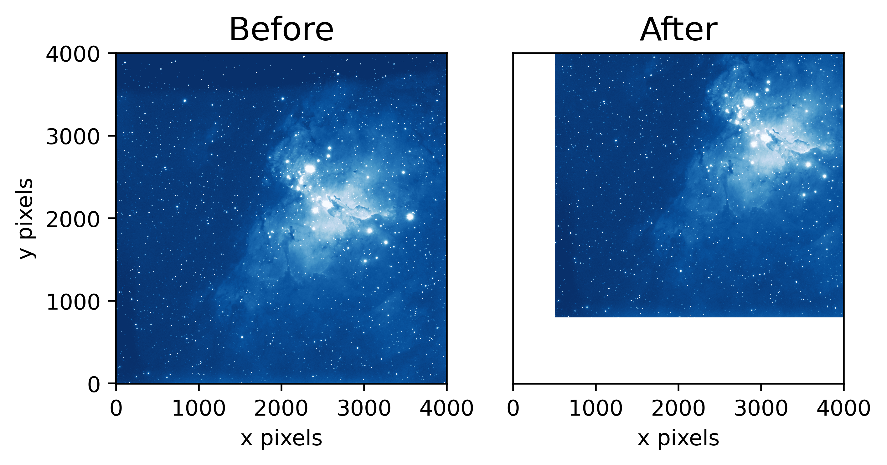
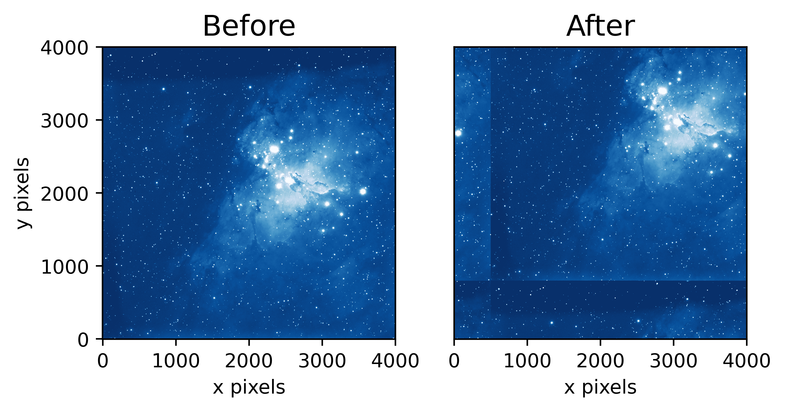

Shifting Images
Contents
Shifting Images¶
import matplotlib.pyplot as plt
from astropy.io import fits
import numpy as np
import matplotlib as mpl
from mpl_toolkits.axes_grid1 import make_axes_locatable
def plot_before_and_after(before, after):
fig, axes = plt.subplots(nrows=1,ncols=2,dpi=500)
# plot the data
axes[0].imshow(before, cmap = 'Blues_r', origin = 'lower',
norm=mpl.colors.LogNorm(vmin = np.percentile(before, 10),
vmax = np.percentile(before, 99.5)))
axes[0].set_title('Before', fontsize=15)
axes[0].set_xlabel('x pixels')
axes[0].set_ylabel('y pixels')
axes[1].imshow(after, cmap = 'Blues_r', origin = 'lower',
norm=mpl.colors.LogNorm(vmin = np.percentile(before, 10),
vmax = np.percentile(before, 99.5)))
axes[1].set_title('After', fontsize=15)
axes[1].set_xlabel('x pixels')
# turn off tick marks
axes[1].set_yticks([])
u = fits.open('M16uA.fits')[0].data
# trim off the edges
u = u[48:-47,48:-47]
# print some details about the image
print(u.shape)
(4001, 4001)
Raw Data Plot¶
plt.figure(dpi=150)
plt.imshow(u, cmap = 'Blues_r', origin = 'lower',
norm=mpl.colors.LogNorm(vmin = np.percentile(u, 10),
vmax = np.percentile(u, 99.5)))
plt.gca().set_xticks([])
plt.gca().set_yticks([])
plt.show()

np.roll(): pixel-level shifting¶
# shifted image
x_shift = 500
y_shift = 800
# be careful about your axes!
u_rolled = np.roll(u, [y_shift, x_shift], axis=(0,1))
plot_before_and_after(u, u_rolled)
scipy.ndimage.shift: spline-interpolation shifting¶
from scipy.ndimage import shift
# shifted image
x_shift = 500.5
y_shift = 800.5
# be careful about your axes!
u_shifted = shift(u, [y_shift, x_shift])
## other options
# mode : tells function what to do about edges
# order : tells the function the order of the spline used
plot_before_and_after(u, u_shifted)

Fourier Shift¶
from scipy.ndimage import fourier_shift
import numpy.fft
# shifted image
x_shift = 500
y_shift = 800
# fourier transform the input
input_ = numpy.fft.fft2(u)
# call fourier shift function
result = fourier_shift(input_, shift = [y_shift, x_shift])
# inverse fourier transform
u_fourier = numpy.fft.ifft2(result).real
plot_before_and_after(u, u_fourier)

star = fits.open('psf_gaussian_51.fits')[0].data[20:-20,20:-20]
fig, axes = plt.subplots(nrows=1,ncols=2,dpi=500)
# plot the data
axes[0].imshow(star, cmap = 'Blues_r', origin = 'lower',
vmin=np.percentile(star,10),vmax=np.percentile(star,99.5))
axes[0].set_title('Star No Shift', fontsize=15)
axes[0].set_xlabel('x pixels')
axes[0].set_ylabel('y pixels')
axes[0].scatter(5,5,color='lightblue',edgecolor='k')
# shift star by half a pixel
shifted_star = shift(star, [0.5, 0.5])
axes[1].imshow(shifted_star, cmap = 'Blues_r', origin = 'lower',
vmin=np.percentile(star,10),vmax=np.percentile(star,99.5))
axes[1].set_title('Star 2', fontsize=15)
axes[1].set_xlabel('x pixels')
axes[1].scatter(5,5,color='lightblue',edgecolor='k')
# turn off tick marks
axes[1].set_yticks([])
[]
Comparing Fourier to Interpolation¶
fig, axes = plt.subplots(nrows=1,ncols=4,dpi=500)
# plot the data
axes[0].imshow(star, cmap = 'Blues_r', origin = 'lower',
vmin=np.percentile(star,10),vmax=np.percentile(star,99.5))
axes[0].set_title('Star No Shift', fontsize=10)
axes[0].set_xlabel('x pixels')
axes[0].set_ylabel('y pixels')
axes[0].scatter(5,5,color='lightblue',edgecolor='k')
# shift star by half a pixel
shifted_star = shift(star, [0.5, 0.5])
axes[1].imshow(shifted_star, cmap = 'Blues_r', origin = 'lower',
vmin=np.percentile(star,10),vmax=np.percentile(star,99.5))
axes[1].set_title('Star Interp. \nShift', fontsize=10)
axes[1].set_xlabel('x pixels')
axes[1].scatter(5,5,color='lightblue',edgecolor='k')
# turn off tick marks
axes[1].set_yticks([])
# fourier shift
input_ = numpy.fft.fft2(star)
# call fourier shift function
result = fourier_shift(input_, shift = [0.5, 0.5])
# inverse fourier transform
fourier_star = numpy.fft.ifft2(result).real
axes[2].imshow(fourier_star, cmap = 'Blues_r', origin = 'lower',
vmin=np.percentile(star,10),vmax=np.percentile(star,99.5))
axes[2].set_title('Star Fourier \nShift', fontsize=10)
axes[2].set_xlabel('x pixels')
axes[2].scatter(5,5,color='lightblue',edgecolor='k')
# turn off tick marks
axes[2].set_yticks([])
# difference between interp and fourier
diff = shifted_star - fourier_star
im = axes[3].imshow(diff, cmap = 'Blues_r', origin = 'lower',
vmin=-0.01,vmax=0.01)
axes[3].set_title('Interp - Fourier \nShift', fontsize=10)
axes[3].set_xlabel('x pixels')
axes[3].scatter(5,5,color='lightblue',edgecolor='k')
# turn off tick marks
axes[3].set_yticks([])
divider = make_axes_locatable(axes[3])
cax = divider.append_axes('right', size='5%', pad=0.05)
fig.colorbar(im, cax=cax, orientation='vertical')
<matplotlib.colorbar.Colorbar at 0x7f97aa5edd90>